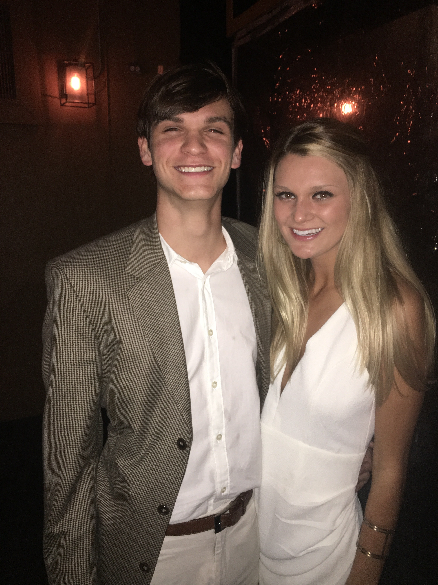

Home Page 
| Current City: | Athens, Georgia |
| College: | University of Georgia |
| Major: | Finance |
Hi and welcome to my homepage! My name is John Snows, and I am a student at The University of Georgia. Here, you can find information about me and my future goals. Currently, I am working on my Finance degree to hopefully work for the Big 4 which are Pricewaterhouse Coopers, Ernst & Young, Deloitte, and KPMG. They are the top in terms of the accounting and consulting world, and they are all known across the world because of their size and reputation. I currently live in Athens Georgia, and after graduation, hopefully move to New York or Boston, depending on where my Job takes me. I have two sisters and one brother, and they all live in Atlanta, Georgia. They all plan on going to UGA, as my mother and father are both alumni there. On my off time, I do rock climbing, cycling, and running marathons. Recently, I participated in a 5K here in Athens, and do marathons in Atlanta from time to time. Also, you can see me often at the Ramsey rock wall climbing the wall there.